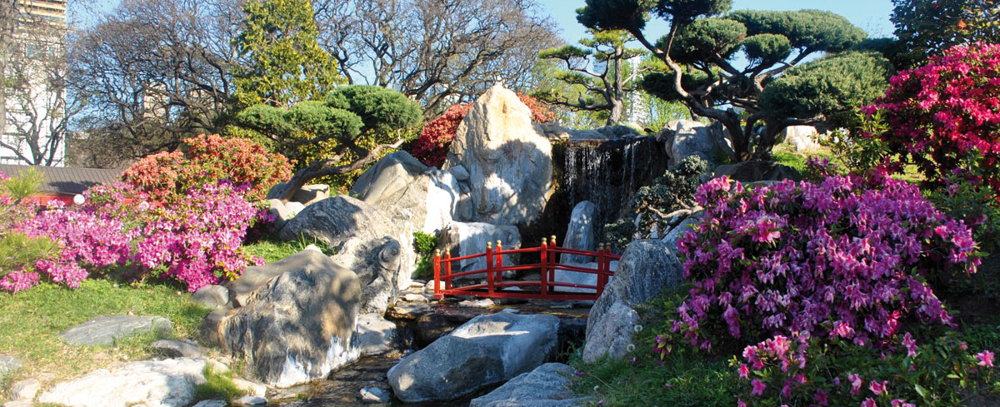
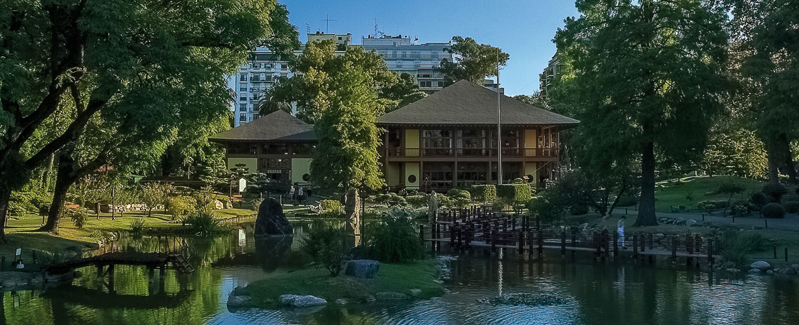
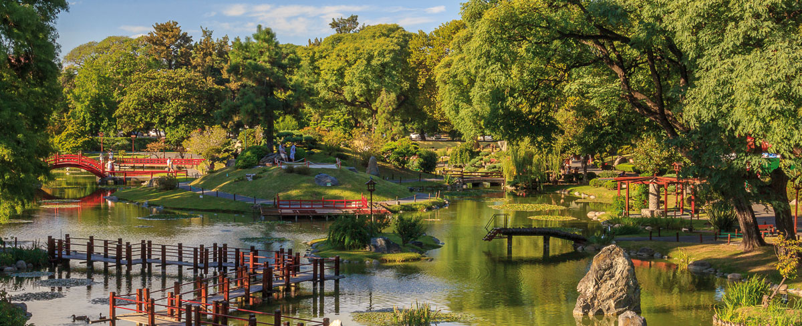

El Jardín Japonés es administrado por la Fundación Cultural Argentino Japonesa. Se autofinancia con los ingresos por abono de las entradas de nuestros visitantes y otras actividades que se desarrollan en el Jardín. El Jardín Japonés no recibe subvención de los gobiernos de Japón, Argentina y la Ciudad Autónoma de Buenos Aires. Gracias a su colaboración podemos mantener este hermoso Jardín.




El Jardín Japonés de la Ciudad de Buenos Aires está abierto todos los días de 10 a 18:45 hs.
Hay 4 turnos de visita por orden de llegada:
🌸 10:00 a 12:00 hs
🌸 12:15 a 14:15 hs
🌸 14:30 a 16:30 hs
🌸 16:45 a 18:45 hs